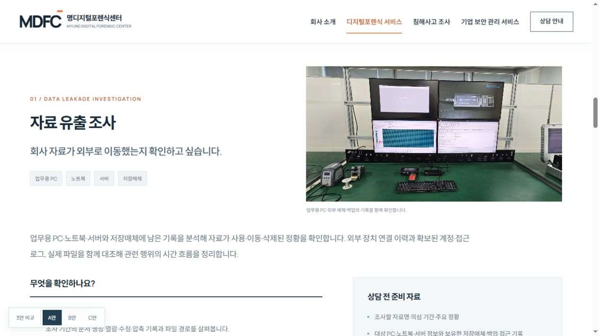
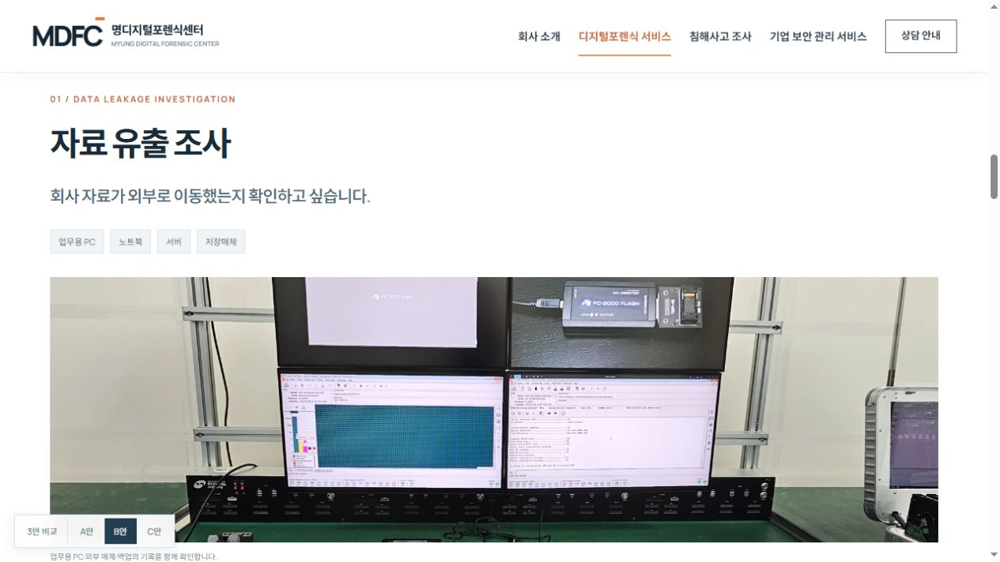
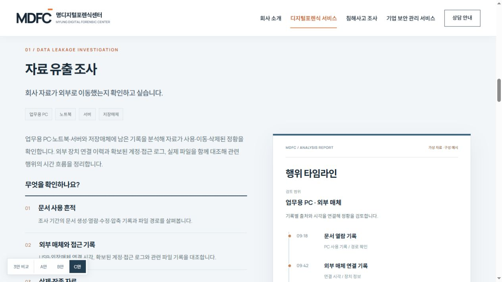

확인하고 싶은 상황에서 시작합니다
의뢰 목적별 안내
의뢰 상황과 확인 항목, 필요한 자료와 전달 결과를 정돈해 목적에 맞는 서비스를 차근차근 살펴봅니다.
상황 · 확인 항목 · 준비 자료 · 전달 결과
전체 시안 보기DIGITAL FORENSICS / THREE STYLES
자료유출 조사, 스마트폰 민형사 관련 분석, 음성·영상 위변조 검토를 중심으로 서비스 내용을 안내합니다. 세 안 모두 일반 스크롤로 읽을 수 있습니다.
일반 스크롤 미리보기 · 현재 상세 페이지 유지
확인하고 싶은 상황에서 시작합니다
의뢰 상황과 확인 항목, 필요한 자료와 전달 결과를 정돈해 목적에 맞는 서비스를 차근차근 살펴봅니다.
상황 · 확인 항목 · 준비 자료 · 전달 결과
전체 시안 보기
넓은 본문으로 읽는 서비스 이야기
큰 사진과 넓은 본문으로 서비스를 설명하고, 준비 자료와 참고 사항은 보조 정보로 나눠 읽기 쉽게 안내합니다.
큰 사진 · 상세 설명 · 별도 참고 정보
전체 시안 보기
어떤 결과를 받는지 먼저 살펴봅니다
보고서와 자료 목록, 타임라인 예시를 중심으로 분석팀의 수행 내용과 결과에 담기는 근거를 설명합니다.
보고서 · 자료 목록 · 타임라인 예시
전체 시안 보기